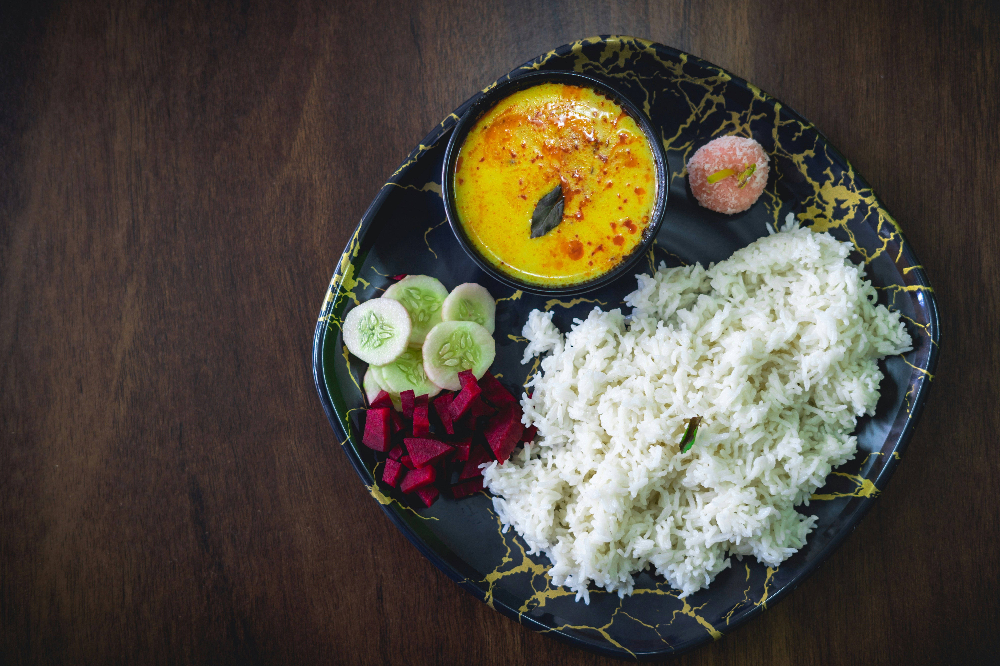

Home

Kadhi Chawal
Kadhi Chawal is a comforting North Indian dish made with tangy
yogurt-based gram flour curry served over steamed rice. It's often
tempered with spices like mustard seeds, curry leaves, and red chili,
offering a perfect balance of flavor and warmth.
Ingredients
- Yogurt (curd)
- Besan (gram flour)
- Water
- Turmeric powder
- Red chili powder
- Salt
- Ginger (optional, grated or paste)
- Green chilies (slit or chopped)
- Mustard seeds
- Cumin seeds
- Fenugreek seeds (optional)
- Asafoetida (hing)
- Curry leaves
- Dry red chilies
- Oil or ghee
- Cooked rice (for serving)
Instructions
-
In a bowl, whisk together yogurt, besan, turmeric, red chili powder, and
salt with 2-3 cups of water until smooth.
-
Pour the mixture into a deep pan and bring to a boil on medium heat,
stirring continuously to avoid curdling.
-
Lower the heat and let it simmer for 20-25 minutes, stirring
occasionally until it thickens slightly.
- In a small pan, heat oil or ghee for tempering.
- Add mustard seeds and let them splutter.
-
Add cumin seeds, fenugreek seeds (if using), a pinch of hing, curry
leaves, dry red chilies, and green chilies.
-
Sauté for a few seconds until aromatic, then pour the tempering over the
kadhi.
-
Mix well and simmer for another 5 minutes to let the flavors combine.
- Serve hot with steamed rice.